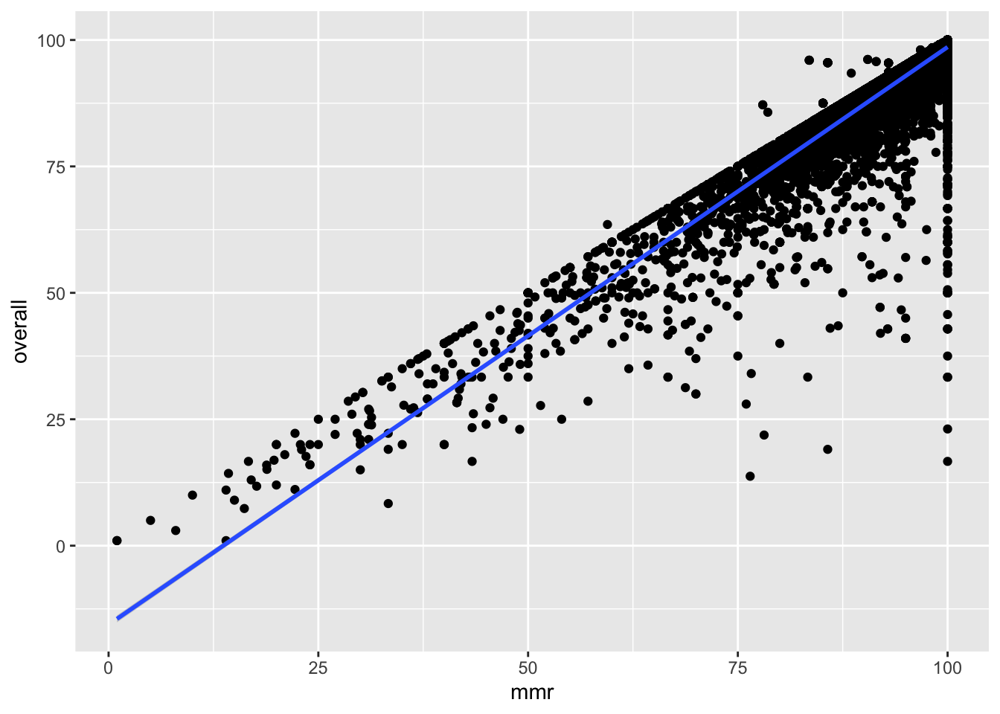
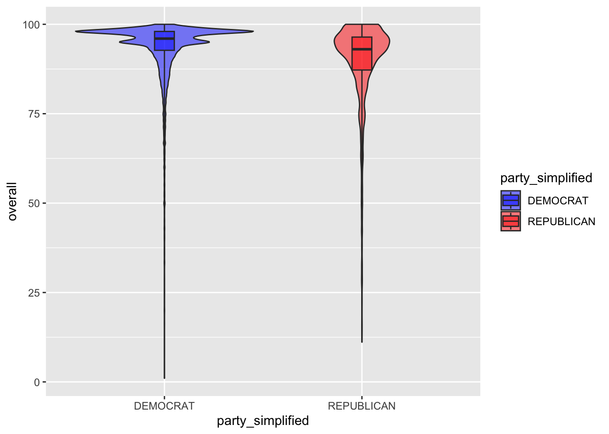
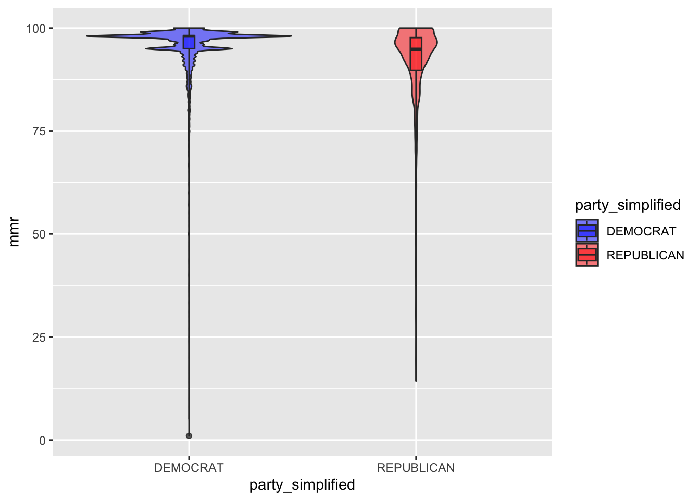
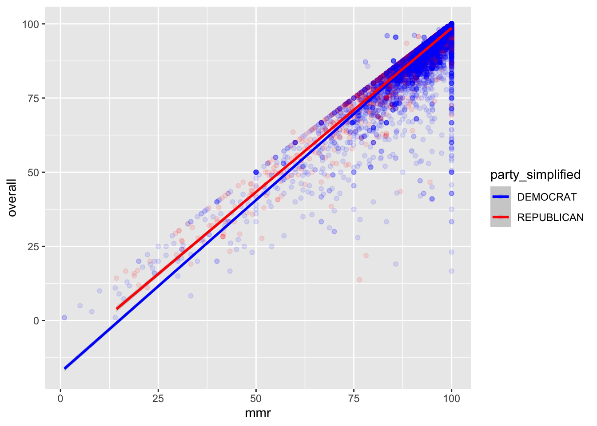

What I did in my last portfolio was pair some data I found on vaccination rates in schools with election data I found that gave each state’s general political affiliation. In this portfolio I want to do some deeper analysis on that data to see what additional questions we can answer.
Let’s get set up and recreate the data we made last time first:
# Load packages
library(tidyverse)
library(tidytuesdayR)
library(parsnip)
# Get data
tuesdata <- tidytuesdayR::tt_load('2020-02-25')##
## Downloading file 1 of 1: `measles.csv`measles <- tuesdata$measles
states <- read_csv("/Users/lawilson1999/Desktop/Data Science Spring 2023/Portfolio/p06/1976-2020-president.csv")
# Process data to merge vaccination data with election info (see portfolio 6 for details)
measles_clean <- measles %>%
filter(lng < 0)
states_2016 <- states %>%
filter(year == 2016) %>%
filter(candidate == "CLINTON, HILLARY" | candidate == "TRUMP, DONALD J.")
state_max_votes <- states_2016 %>%
group_by(state) %>%
summarize(max(candidatevotes))
names(state_max_votes)[2] <- "maxvotes"
state_winners <- merge(states_2016, state_max_votes, by = "state")
state_winners <- state_winners %>%
filter(candidatevotes == maxvotes)
state_parties <- state_winners %>%
select(state, party_simplified) %>%
mutate(state = str_to_title(state))
measles_politics <- merge(measles_clean, state_parties, by = "state")The first question I have: how closely are measles vaccination rates related to overall vaccination rates. In other words, to what extent does giving your child a single vaccination predict your likelihood to give your child a full course of vaccinations? Let’s find out:
# Zero order correlation
measles_politics_clean <- measles_politics %>%
filter(mmr != -1) %>%
filter(overall != -1)
cor(measles_politics_clean$mmr, measles_politics_clean$overall)## [1] 0.8986528# Linear model predicting overall vaccination rate from MMR vaccination rate
m_overall_mmr <- linear_reg() %>%
set_engine("lm") %>%
fit(overall ~ mmr, data = measles_politics_clean)
tidy(m_overall_mmr)## # A tibble: 2 × 5
## term estimate std.error statistic p.value
## <chr> <dbl> <dbl> <dbl> <dbl>
## 1 (Intercept) -15.6 0.361 -43.3 0
## 2 mmr 1.14 0.00379 301. 0glance(m_overall_mmr)## # A tibble: 1 × 12
## r.squared adj.r.squared sigma statistic p.value df logLik AIC BIC
## <dbl> <dbl> <dbl> <dbl> <dbl> <dbl> <dbl> <dbl> <dbl>
## 1 0.808 0.808 4.31 90745. 0 1 -62294. 124593. 124617.
## # ℹ 3 more variables: deviance <dbl>, df.residual <int>, nobs <int># Visualization
measles_politics_clean %>%
ggplot(aes(x = mmr, y = overall)) +
geom_jitter() +
geom_smooth(method = "lm")## `geom_smooth()` using formula = 'y ~ x'
Unsurprisingly, the two variables are very highly correlated, and knowing a school’s MMR vaccination rate explains more than 80% of the variance in overall vaccination rate. It looks like, as a general rule, people are pretty likely to finish a course of vaccines once they start.
Next, I’m curious as to how predictive a state’s political affiliation is of its overall vaccination rate. We. know from portfolio 6 that there is a. significant difference between red and blue states in both MMR and overall vaccination, but how much variance does that difference actually explain?
Let’s find out:
# Linear model predicting overall vaccination rate from state political affiliation
m_overall_politics <- linear_reg() %>%
set_engine("lm") %>%
fit(overall ~ party_simplified, data = measles_politics_clean)
tidy(m_overall_politics)## # A tibble: 2 × 5
## term estimate std.error statistic p.value
## <chr> <dbl> <dbl> <dbl> <dbl>
## 1 (Intercept) 93.2 0.0712 1309. 0
## 2 party_simplifiedREPUBLICAN -4.04 0.194 -20.9 1.07e-95glance(m_overall_politics)## # A tibble: 1 × 12
## r.squared adj.r.squared sigma statistic p.value df logLik AIC BIC
## <dbl> <dbl> <dbl> <dbl> <dbl> <dbl> <dbl> <dbl> <dbl>
## 1 0.0197 0.0197 9.74 435. 1.07e-95 1 -79897. 159800. 159824.
## # ℹ 3 more variables: deviance <dbl>, df.residual <int>, nobs <int>#Visualization
measles_politics_clean %>%
ggplot(aes(x = party_simplified, y = overall, fill = party_simplified)) +
geom_violin(alpha = 0.5)+
geom_boxplot(width = 0.1, coef = 30, alpha = 0.5) +
scale_fill_manual(values = c("blue", "red"))
So the difference between red and blue states in vaccination rates is significant (i.e., nonrandom), but it isn’t huge and it doesn’t explain much variance in overall vaccination. Since overall vaccination and MMR vaccination are so tightly correlated, I imagine the pattern won’t look extremely different if we look at MMR exclusively, but for the sake of completeness I think it’s worth taking a look at:
# Linear model predicting MMR vaccination rate from state political affiliation
m_mmr_politics <- linear_reg() %>%
set_engine("lm") %>%
fit(mmr ~ party_simplified, data = measles_politics_clean)
tidy(m_mmr_politics)## # A tibble: 2 × 5
## term estimate std.error statistic p.value
## <chr> <dbl> <dbl> <dbl> <dbl>
## 1 (Intercept) 95.3 0.0557 1710. 0
## 2 party_simplifiedREPUBLICAN -3.87 0.152 -25.5 3.76e-141glance(m_mmr_politics)## # A tibble: 1 × 12
## r.squared adj.r.squared sigma statistic p.value df logLik AIC BIC
## <dbl> <dbl> <dbl> <dbl> <dbl> <dbl> <dbl> <dbl> <dbl>
## 1 0.0292 0.0291 7.62 649. 3.76e-141 1 -74606. 149218. 1.49e5
## # ℹ 3 more variables: deviance <dbl>, df.residual <int>, nobs <int>#Visualization
measles_politics_clean %>%
ggplot(aes(x = party_simplified, y = mmr, fill = party_simplified)) +
geom_violin(alpha = 0.5)+
geom_boxplot(width = 0.05, coef = 30, alpha = 0.5) +
scale_fill_manual(values = c("blue", "red")) It looks like state politics are a bit more predictive of MMR vaccination rates than overall vaccination rates, but just like I expected the general pattern of data is very similar.
Finally, I want to put everything I’ve done so far together and ask: does political affiliation moderate the degree which MMR vaccination predicts overall vaccination? In other words, are people less likely to follow through with the full course of vaccines once they get the MMR vaccine in red states than in blue states (or vice versa)? Calculating a model with overall vaccination as the outcome variable and with political affiliation and MMR rates as predictors should give me an interaction term that answers that question:
# Linear model predicting overall vaccination rate from state political affiliation and MMR rates
m_overall_mmr_politics <- linear_reg() %>%
set_engine("lm") %>%
fit(overall ~ mmr*party_simplified, data = measles_politics_clean)
tidy(m_overall_mmr_politics)## # A tibble: 4 × 5
## term estimate std.error statistic p.value
## <chr> <dbl> <dbl> <dbl> <dbl>
## 1 (Intercept) -17.4 0.433 -40.2 0
## 2 mmr 1.16 0.00453 256. 0
## 3 party_simplifiedREPUBLICAN 5.49 0.797 6.89 5.77e-12
## 4 mmr:party_simplifiedREPUBLICAN -0.0551 0.00856 -6.44 1.18e-10glance(m_overall_mmr_politics)## # A tibble: 1 × 12
## r.squared adj.r.squared sigma statistic p.value df logLik AIC BIC
## <dbl> <dbl> <dbl> <dbl> <dbl> <dbl> <dbl> <dbl> <dbl>
## 1 0.808 0.808 4.31 30351. 0 3 -62263. 124536. 124576.
## # ℹ 3 more variables: deviance <dbl>, df.residual <int>, nobs <int># Visualization
measles_politics_clean %>%
ggplot(aes(x = mmr, y = overall, color = party_simplified)) +
geom_jitter(alpha = 0.1) +
geom_smooth(method = "lm") +
scale_color_manual(values = c("blue", "red"))## `geom_smooth()` using formula = 'y ~ x'
It looks like my hunch was in the right direction. The interaction term we have here suggests that a one percent increase in MMR vaccination rates predicts slightly (but significantly) less of an increase in overall vaccination for red states than blue states. In other words, people in red states are less likely than those in blue states to follow through with a full course of vaccination after the MMR shot. However comparing the adjusted R-squared of this model with the that of the original model from Part 1, we see that we’re only explaining 0.1% more variance after factoring in state politics.
In conclusion, we’ve seen that:
Vaccination rates are generally high
Vaccination rates are lower in red states than blue states
MMR vaccination predicts overall vaccination
People are slightly, but non-randomly, more likely to covert MMR vaccinations into full vaccination courses in blue states than red states